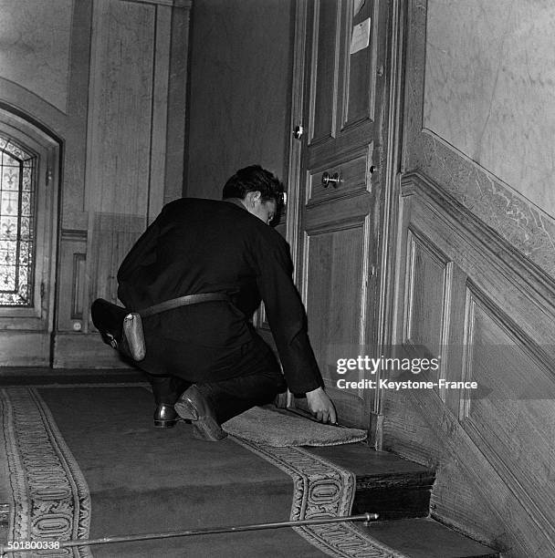

Cartas que nunca enviamos
Mensajes escritos con cariño que se quedaron guardados en un cajón
Volver a exposicionesPalabras nerviosas escritas con letra temblorosa y mucho cariño
Un mensaje de viaje que nunca encontró a quién llegar
Unas pocas líneas en la primera página de un libro regalado.

Un papel doblado que decía lo que no se podía decir en voz alta.